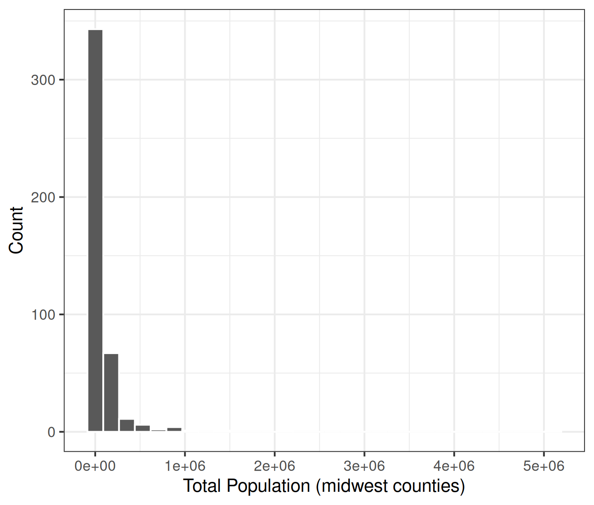
Today’s Agenda
Creating, Transforming and Indexing Variables
New Script: “Creating and Transforming Variables.R”
Add
library(tidyverse)to the top of the new script
Justin Leinaweaver (Spring 2026)
Univariate Analyses
Descriptive statistics (means, medians, modes, counts, SDs, etc)
Visualizations (bar plots, box plots, histograms)
This Week
Modifying variables to help us analyze and present them
Creating new variables to better measure our concepts
Problem
- Labels (and statistics) are hard to read and understand
| N | 437.0 |
| Mean | 96130.3 |
| SD | 298170.5 |
| Min | 1701.0 |
| Max | 5105067.0 |
Solution
- Rescale the variable: Move the decimal
Min. 1st Qu. Median Mean 3rd Qu. Max.
1.701 18.840 35.324 96.130 75.651 5105.067 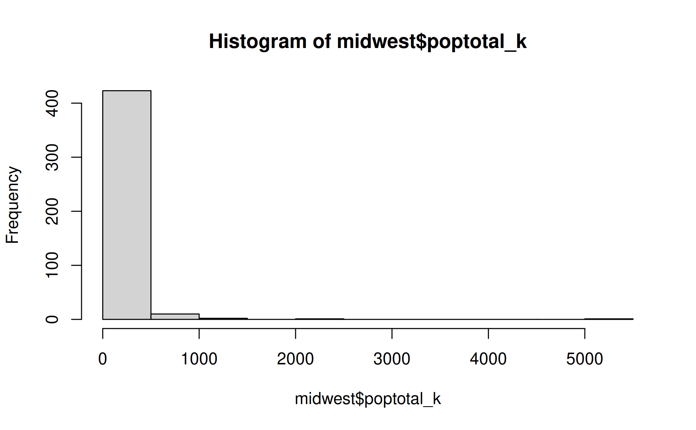
Min. 1st Qu. Median Mean 3rd Qu. Max.
0.001701 0.018840 0.035324 0.096130 0.075651 5.105067 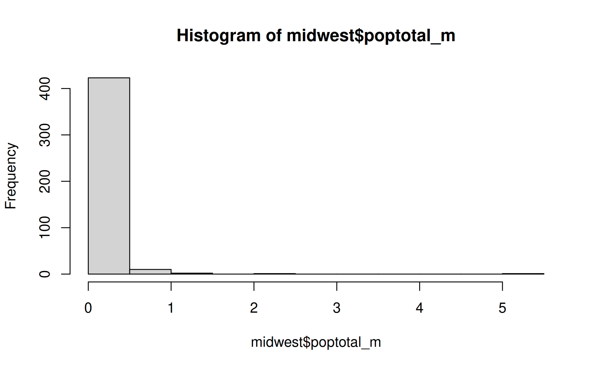
Problem
- Distribution is so right-skewed we can’t see the actual variation
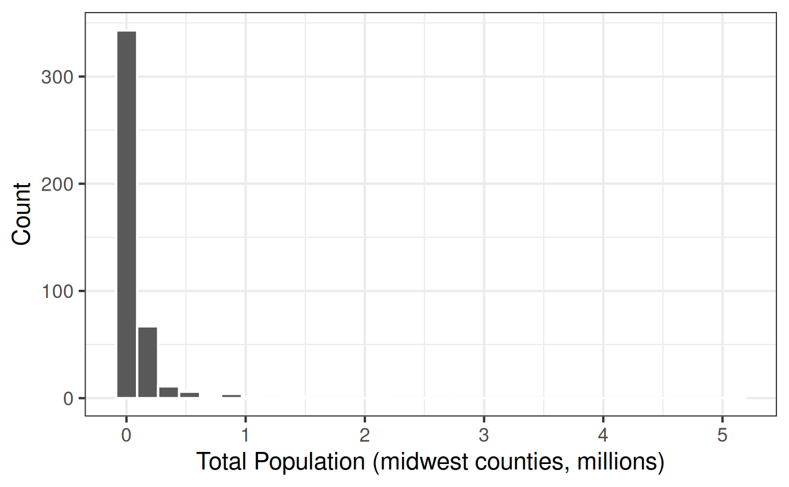
Solution
- Rescale the variable: Change the scale (log)
Min. 1st Qu. Median Mean 3rd Qu. Max.
7.439 9.844 10.472 10.606 11.234 15.446 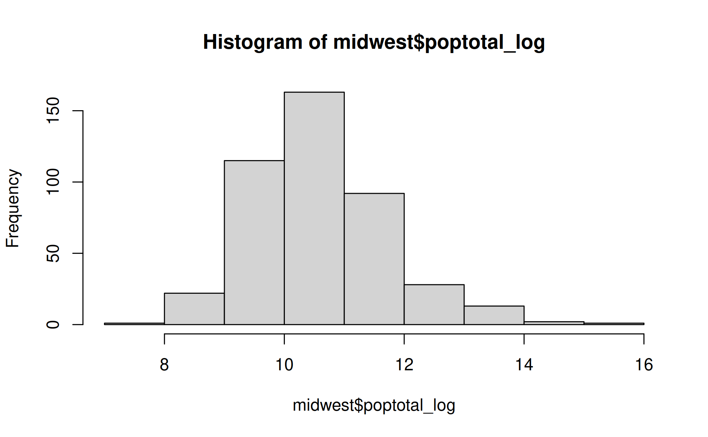
Original Scale
Min. 1st Qu. Median Mean 3rd Qu. Max.
1701 18840 35324 96130 75651 5105067 
Log Scale
Min. 1st Qu. Median Mean 3rd Qu. Max.
7.439 9.844 10.472 10.606 11.234 15.446 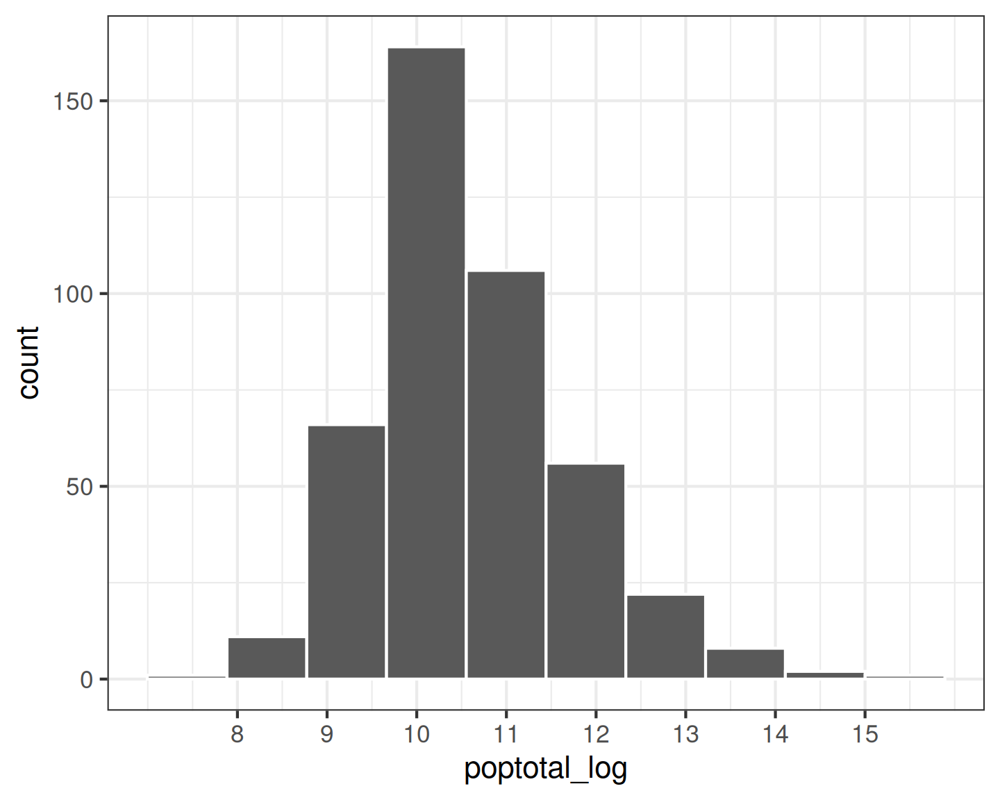
Original Scale
Min. 1st Qu. Median Mean 3rd Qu. Max.
1701 18840 35324 96130 75651 5105067 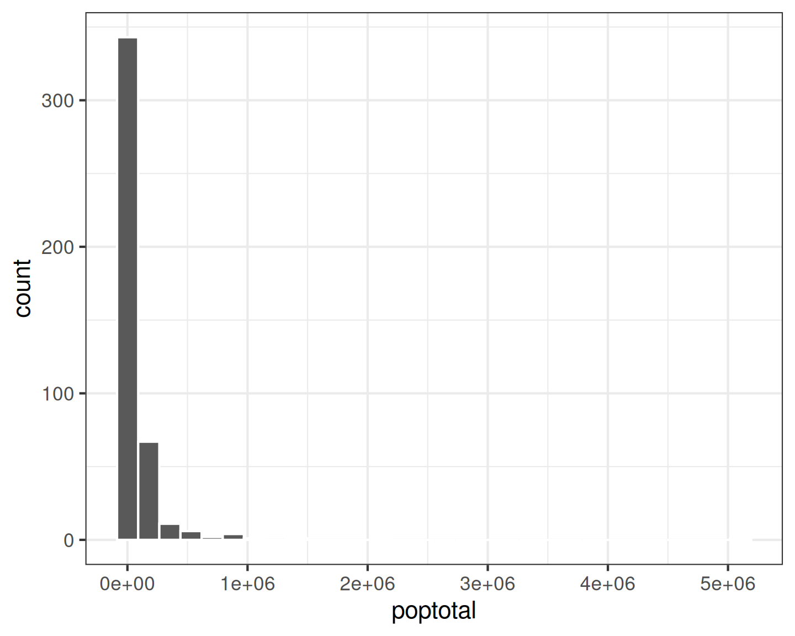
Log Scale
Min. 1st Qu. Median Mean 3rd Qu. Max.
7.439 9.844 10.472 10.606 11.234 15.446 
Problem
- You want to focus on one level or region of a distribution
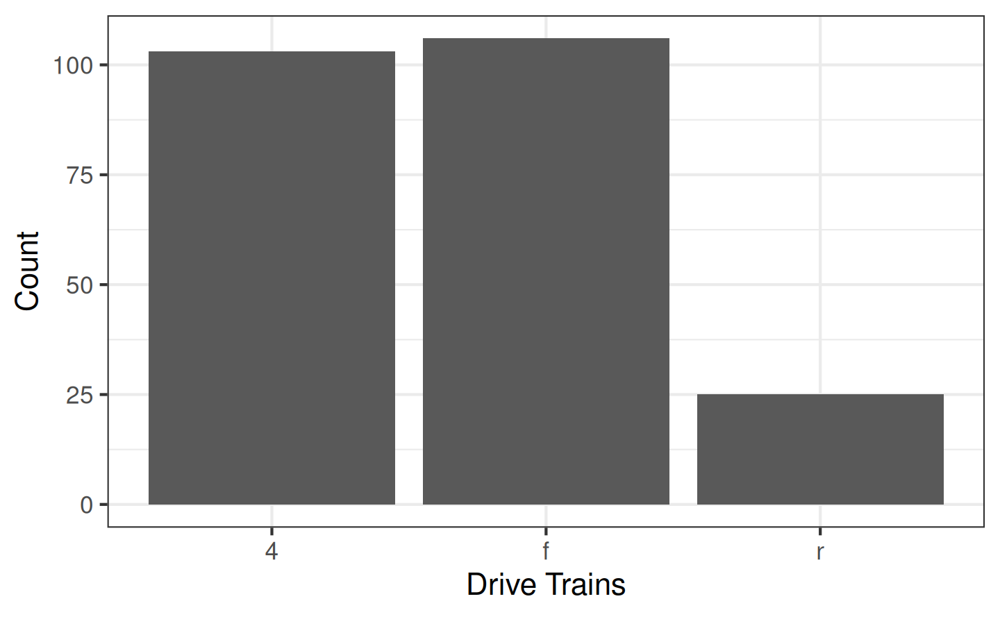
Solution
- Create a dummy variable with ifelse()
Using if_else to evaluate your data
Front Wheel Other
106 128 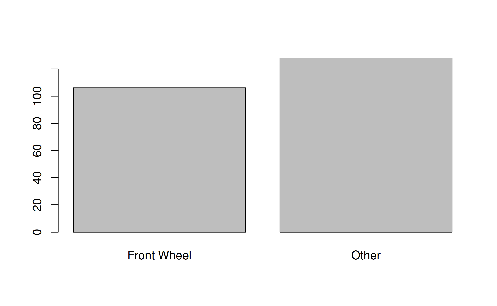
Bottom 75% Top 25%
168 66 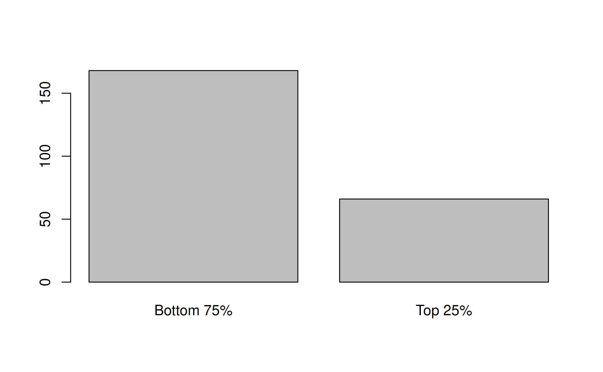
Problem
- You want to convert an interval variable into an ordinal variable
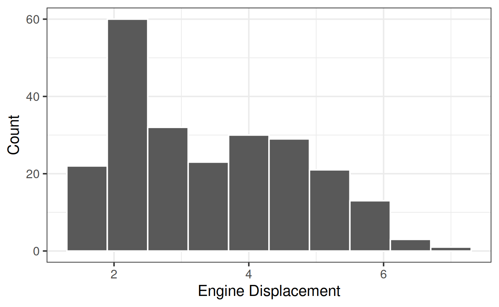
Solution
- Cut the interval variable into labelled bins
Min. 1st Qu. Median Mean 3rd Qu. Max.
1.600 2.400 3.300 3.472 4.600 7.000 [1] (1.5,2.4] (1.5,2.4] (1.5,2.4] (1.5,2.4] (2.4,3.3] (2.4,3.3] (2.4,3.3]
[8] (1.5,2.4] (1.5,2.4] (1.5,2.4] (1.5,2.4] (2.4,3.3] (2.4,3.3] (2.4,3.3]
[15] (2.4,3.3] (2.4,3.3] (2.4,3.3] (3.3,4.6] (4.6,7.2] (4.6,7.2] (4.6,7.2]
[22] (4.6,7.2] (4.6,7.2] (4.6,7.2] (4.6,7.2] (4.6,7.2] (4.6,7.2] (4.6,7.2]
[29] (4.6,7.2] (4.6,7.2] (4.6,7.2] (4.6,7.2] (1.5,2.4] (1.5,2.4] (2.4,3.3]
[36] (3.3,4.6] (3.3,4.6] (1.5,2.4] (2.4,3.3] (2.4,3.3] (2.4,3.3] (2.4,3.3]
[43] (2.4,3.3] (2.4,3.3] (3.3,4.6] (3.3,4.6] (3.3,4.6] (3.3,4.6] (3.3,4.6]
[50] (3.3,4.6] (3.3,4.6] (3.3,4.6] (4.6,7.2] (4.6,7.2] (4.6,7.2] (4.6,7.2]
[57] (4.6,7.2] (3.3,4.6] (4.6,7.2] (4.6,7.2] (4.6,7.2] (4.6,7.2] (4.6,7.2]
[64] (4.6,7.2] (4.6,7.2] (4.6,7.2] (4.6,7.2] (4.6,7.2] (4.6,7.2] (4.6,7.2]
[71] (4.6,7.2] (4.6,7.2] (4.6,7.2] (4.6,7.2] (3.3,4.6] (4.6,7.2] (4.6,7.2]
[78] (3.3,4.6] (3.3,4.6] (3.3,4.6] (3.3,4.6] (3.3,4.6] (4.6,7.2] (3.3,4.6]
[85] (3.3,4.6] (3.3,4.6] (3.3,4.6] (3.3,4.6] (4.6,7.2] (4.6,7.2] (3.3,4.6]
[92] (3.3,4.6] (3.3,4.6] (3.3,4.6] (3.3,4.6] (3.3,4.6] (3.3,4.6] (3.3,4.6]
[99] (4.6,7.2] (1.5,2.4] (1.5,2.4] (1.5,2.4] (1.5,2.4] (1.5,2.4] (1.5,2.4]
[106] (1.5,2.4] (1.5,2.4] (1.5,2.4] (1.5,2.4] (1.5,2.4] (1.5,2.4] (1.5,2.4]
[113] (2.4,3.3] (2.4,3.3] (2.4,3.3] (1.5,2.4] (1.5,2.4] (1.5,2.4] (1.5,2.4]
[120] (2.4,3.3] (2.4,3.3] (2.4,3.3] (2.4,3.3] (3.3,4.6] (3.3,4.6] (4.6,7.2]
[127] (4.6,7.2] (4.6,7.2] (4.6,7.2] (4.6,7.2] (3.3,4.6] (3.3,4.6] (3.3,4.6]
[134] (3.3,4.6] (4.6,7.2] (4.6,7.2] (4.6,7.2] (3.3,4.6] (3.3,4.6] (3.3,4.6]
[141] (4.6,7.2] (1.5,2.4] (1.5,2.4] (2.4,3.3] (2.4,3.3] (3.3,4.6] (3.3,4.6]
[148] (2.4,3.3] (2.4,3.3] (3.3,4.6] (2.4,3.3] (2.4,3.3] (3.3,4.6] (4.6,7.2]
[155] (2.4,3.3] (3.3,4.6] (3.3,4.6] (3.3,4.6] (4.6,7.2] (2.4,3.3] (2.4,3.3]
[162] (2.4,3.3] (2.4,3.3] (2.4,3.3] (2.4,3.3] (1.5,2.4] (1.5,2.4] (2.4,3.3]
[169] (2.4,3.3] (2.4,3.3] (2.4,3.3] (2.4,3.3] (2.4,3.3] (2.4,3.3] (2.4,3.3]
[176] (3.3,4.6] (3.3,4.6] (3.3,4.6] (4.6,7.2] (1.5,2.4] (1.5,2.4] (1.5,2.4]
[183] (1.5,2.4] (2.4,3.3] (2.4,3.3] (3.3,4.6] (1.5,2.4] (1.5,2.4] (1.5,2.4]
[190] (1.5,2.4] (2.4,3.3] (2.4,3.3] (2.4,3.3] (1.5,2.4] (1.5,2.4] (1.5,2.4]
[197] (1.5,2.4] (1.5,2.4] (4.6,7.2] (4.6,7.2] (2.4,3.3] (2.4,3.3] (2.4,3.3]
[204] (3.3,4.6] (3.3,4.6] (3.3,4.6] (3.3,4.6] (1.5,2.4] (1.5,2.4] (1.5,2.4]
[211] (1.5,2.4] (2.4,3.3] (1.5,2.4] (1.5,2.4] (1.5,2.4] (1.5,2.4] (1.5,2.4]
[218] (2.4,3.3] (2.4,3.3] (2.4,3.3] (2.4,3.3] (1.5,2.4] (1.5,2.4] (1.5,2.4]
[225] (1.5,2.4] (2.4,3.3] (2.4,3.3] (1.5,2.4] (1.5,2.4] (1.5,2.4] (1.5,2.4]
[232] (2.4,3.3] (2.4,3.3] (3.3,4.6]
Levels: (1.5,2.4] (2.4,3.3] (3.3,4.6] (4.6,7.2]
1st Q 2nd Q 3rd Q 4th Q
62 61 56 55 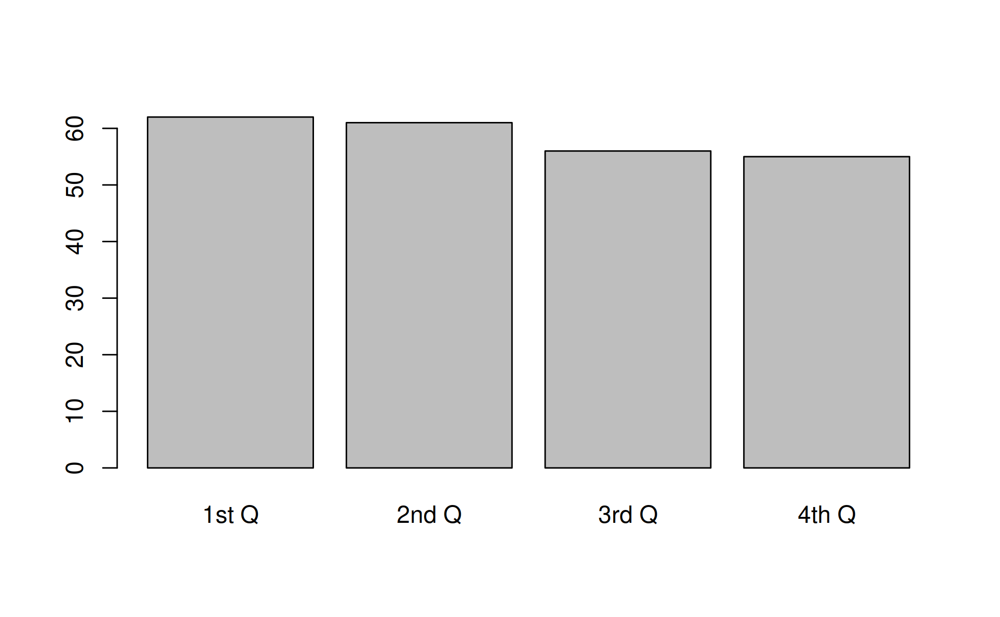
1st Q 2nd Q 3rd Q 4th Q
110 109 109 109 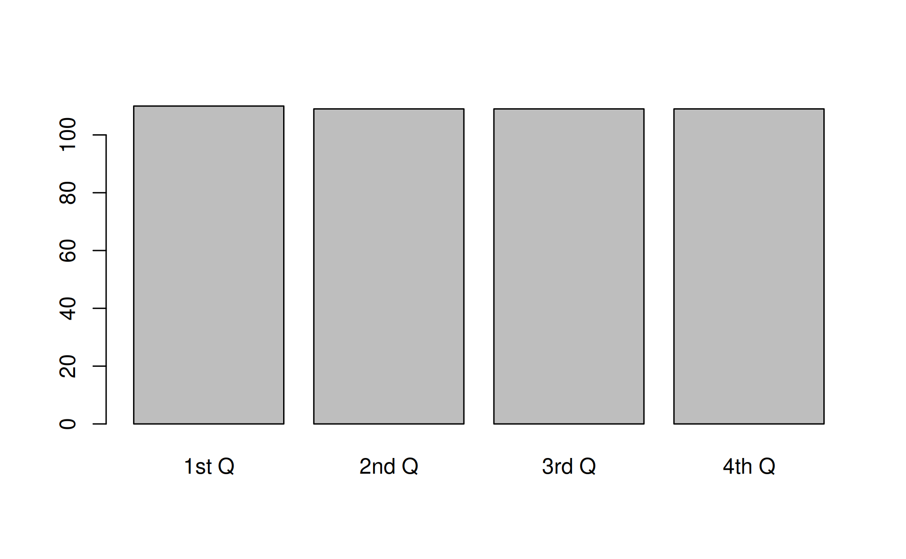
For Next Class
Practice today’s code on our Canvas assignment
- Data: SP2026-Wk05-WDI_Data.xlsx
Read the background document on the Annual National Election Survey (ANES)
Read through the ANES variables list on Canvas